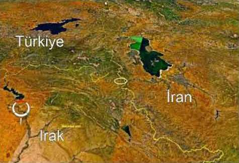

Üçgendeki Sır, Hakurke

“Kuzeyde oluşan otorite boşluğu ve Birleşmiş Milletler’in bu bölgeye uyguladığı uçuşa yasak bölgeden de yararlanarak çok kısa zamanda büyük bir güç haline geldik. Çok sayıda silah, mayın, ağır silahlar ve mühimmat elimize geçti. Örgütümüzü kısa zamanda bu silahlarla donatarak büyük bir güç kazandık...”
Abdullah Öcalan, 22 Şubat 1999
Şemdinli, Hakkari’nin üç ilçesinden biridir, diğerleri Yüksekova ve Çukurca’dır. Her üç ilçe de, Büyük Kurdistan denilen projenin can damarıdır. Buralar ele geçirilmeden bu proje gerçekleşemez. Yüksekova, uyuşturucu kaçakçılığının merkezidir, hemen üst komşusu Başkale gibi, PKK terör örgütüne önemli finansman sağlar. Ayrıca, Van ve Bitlis yörelerine atlama taşıdır. Şemdinli, Öcalan’ın, “bir parça özgür vatan” hayalindeki yer olup, Irak kuzeyindeki teröristlerin ülkemize giriş yaptığı yerdir. Çukurca ise, gene Irak’taki teröristlerin yurdumuza dağıtım noktasıdır, Şırnak - Siirt havalisine geçerler.
Söylemiştim size, Şemdinli’yi terörist coğrafyası yapan üç ana faktör vardır: birincisi üçgende oluşu, ikincisi dağlar, üçüncüsü ise kamplar. PKK ana kampı Hakurke hemen Şemdinli güneyindedir, üç beş saatlik yaya yürüyüş mesafesinde. Şemdinli’yi üçgeninin hassasiyeti esas itibariyle Hakurke’den ileri gelir. Resimde gördüğünüz Şemdinli’dir yani üçlü sınır. Resmin sağ yanı İran, sol alt yanı ise Irak’tır. PKK’nın ana üssü Hakurke, resmin altındaki karanlık dağların olduğu yerdir. Askerler buraya Hakurk der, teröristler Hakurke, vatandaş ise Hakurki. Teröristi anlattığımız için biz bu karanlık dağlara Hakurke diyeceğiz.
Stratejik bir üs bölgesidir burası. İster hava indirme, isterseniz kara harekâtı yapın bu bölgede, teröristlerin kaçmak için iki seçeneği vardır. Ama sizin bu iki seçeneğe karşı, ne yazık ki uygulayabileceğiniz bir karşı seçenek yoktur. Nedir bu iki seçenek? Ya kuzeydoğuya İran’a kaçmak, ya da güneye, 36. paralelin güneyine inmek! Her ikisi de sizi çaresiz bırakır; İran’a giremezsiniz, güneye inemezsiniz.
Öcalan’ın Hakurke’sini anlamak için Karadağ’a çıkmalı, Karakoca gitmelisiniz. Korucu Sıddık’ın bir çayını içmeli, babasının elini öpmelisiniz. Ama artık onlar yok; Sıddık şehit oldu babası ise öldü. Olsun, onların ruhu var oralarda, kahramanlıkları dilden dile dolaşır durur. Onların çocukları var, torunları var, onları görmelisiniz. Çok sıcakkanlı insanlardır, toprağını sever, PKK’ya destek vermez. Zordur işleri çünkü Hakurke tam karşılarındadır, deyin ki iki saatlik yaya yol mesafesi. PKK’nın ana kampına en yakın yerleşim yerimizdir. Dayandı onlar, şehit oldu onlar ama köylerini terk etmediler. Hemen yanı başındaki Horyürek karakolumuzu biz kapattık ama onlar mücadeleyi bırakmadı, köylerini boşaltmadılar, toprağı PKK’ya terk etmediler, hâlâ mücadeleyi sürdürüyorlar.
Kahraman Karakoç’tan güneye baktığınızda Hakurke’nin dağlarını, Ari Düzlüğü ve de gediğini görebilirsiniz. Çok yakındır size. Hiç unutmam, bir gün Karakoç’a geldik. Sıddık’ın çayını içtik, Gasto’ya doğru bir uzandık. Bir baktım ki ne göreyim; karşımızda Ari, Ari’nin sırtlarında bir grup terörist bize bakıp halay çekiyor. Havanlar konuştu, makineli tüfekler konuştu, düşenleri gördüm ama kaçmadılar. Hakurke bir efsane onlar için, orada kendilerine hiçbir şey olmayacağına inanıyorlar. Bu cesaret değil, bu bile bile ölüme gitmek değil, bu garip bir şey izahı güç. Nasıl bir muhakeme bu, anlamak zor. Ateşin yaktığını bilmez mi insan? İnanın bilmediler. Size anlattığım dağdakiler bunlar işte. Kaçmadılar ve göz göre göre yaktı ateş onları.
Üs bölgesi olarak Hakurke, Türkiye’ye en yakın noktadır. Dalamperyani Zagros’u tutarsanız, sizi ne İran yakalayabilir, ne de Türkiye. Yakalamak isteyen olursa eğer, şimdiki gibi Kandil Dağı’na çekilirsiniz. Hakurke arazisi zordur; kayalık, derin çataklar, mağaralar, çaylar, sular, ağaçlık. Teröristin barınması, saklanması, sığınak yapması için her türlü imkânı verir. Buraya yapılan hava taarruzları sonuç vermez, yazık atılan bombalara. Öyle bir günde arayamazsınız. Öyle bir tugay gücüyle de arayamazsınız. En az iki tugay, en az bir ay gerekir Hakurke’yi ele geçirmek için. Hele ki operasyon öncesinde İran sınırındaki Zagros’u geceden tutmazsanız ve de güneye kaçış yollarını kesmezseniz, onca çabaya yazık olur, teröristler hemen kaçar.
Operasyonu yalnız PKK’ya karşı da yaparsanız, gene yazık olur onca emeğe, gayrete çünkü PKK’nın yarısı Barzani ve Talabani’nin peşmergeleri içinde barınır. “92 Ekim harekâtı sonrasında Türk ordusundan kaçan PKK’lıların büyük bir çoğunluğu peşmergelere sığınmış ve hâlâ da onlarla birlikte yaşamaktadır. Dolayısıyla PKK’ya operasyon yapmak demek; peşmergelere operasyon yapmak demektir, sakın unutmayınız. Peşmergeye vurmadan PKK’ya vuramazsınız çünkü ikisi de aynıdır. Irak’taki Kürt varlığını haritadan silmek, Amerika’nın yerli Kızılderililere yaptığı gibi, düşünülemeyeceğine göre en iyisi; PKK’yı yok etmektir, Barzani’yi ise iyi bir silkeleyip zayıflatmak ve kontrol altında tutmaktır. İran’la dirsek teması kurulur, niyetimiz açıklanır, gizli desteği alınırsa kolay hallederiz bu işi Amerika’ya rağmen. Karşı mı çıkacak? Afganistan’dan, Lübnan’dan askerlerimizi çekeriz, Habur’u kapatır Barzani’nin gırtlağını sıkarız. Çok zorda kalırsak İncirlik üssünü uçuşa yasaklarız. Irak’taki Amerikan katliamını BM’e taşırız, protesto ederiz, Rusya’yla Çin’le savunma anlaşmaları imzalarız. Elbet bir çare buluruz, asla çaresiz değiliz biz.
Hakurke’nin Irak tarafında ve batıya doğru sırasıyla Basyan, Mezi, Keryaderi, Şive, Haftanin, Sinat kampları bulunur. Bu kamplar ise, eylem için teröristlerin hazırlık yaptığı yerlerdir; lojistik sağlanır, eğitim yapılır, eylem sonrası buralara kaçılır. Siz operasyon yaparsanız hepsi dağılır ve Hakurke’de toplanır.
Aslında bu hikâye 1991’de başlar. Ne olmuştur l991 de? Saddam’ın öfkesinden kaçan Iraklılar Şemdinli-Samanlı sınırına yığılmıştır hem de yüz binlercesi. Özal, ABD ile işbirliğine gitmiştir Saddam’ı devirmek için ama devirememiştir. Saddam da karşı hamle olarak PKK ile anlaşmıştır. Irak kuzeyine yerleşmesine izin vermiştir ve de silahlandırmıştır. Amacı, ABD’ye karşı kendisini yalnız bırakan Türkiye’yi cezalandırmaktır ve bunu da başarmıştır.
Biz, sayısı beş yüz bine varan sığınmacıların sorunları ile uğraşırken, PKK güney doğu sınırlarımıza yerleşmiş, silahlanmış ve eğitim yapmıştır. Abdullah Öcalan çok güzel bir yer keşfetmiştir bu iş için, Hakurke! Bakın ne diyor: “Kuzeyde oluşan otorite boşluğu ve Birleşmiş Milletlerin bu bölgeye uyguladığı uçuşa yasak bölgeden de yararlanarak çok kısa zamanda büyük bir güç haline geldik. Çok sayıda silah, mayın, ağır silahlar ve mühimmat elimize geçti. Örgütümüzü kısa zamanda bu silahlarla donatarak büyük bir güç kazandık...”
Öcalan’ın anlatmak istediği bölge, aslında üçlü sınırdan başlayıp Cizre’ye kadar uzanan sınır boylarıdır. Buralar aynı zamanda Botan - Behdinan savaş hükümetinin yerleşmesini düşlediği bölgedir. 1991’de Hakurke’ye operasyon planlanmış ancak yapılmamıştır. O dönem bölgede Tabur komutanı olarak görevli emekli General Alaattin Parmaksız, anılarını dile getirdiği “Burası Hakkari” isimli kitabında operasyon detaylarını anlatıyor ancak son anda operasyonun iptal edildiğini dile getiriyor. Aslında hedef iyi tespit edilmiş, terörist mevzileri hava keşfiyle belirlenmiş, üç komando taburuyla icra edilmesi planlanan operasyon ise son anda iptal edilmiştir. Bizce bu operasyon yapılmış olmalıydı. Hakurke’ye girilmiş ve tehdidin Önemi ortaya konmuş olmalıydı. 1992 ve sonrasında belki PKK tehdidi bu denli büyük olmazdı.
‘92 Ekim Harekâtında ise, Hakurke’ye girilmiş ama teröristlerin büyük bir kısmı İran’a yani Zagros’a kaçmıştır. Harekâtta gördüğümüz en büyük eksiklik, Zagros denilen İran- Irak sınır boylarının, bir gece harekâtıyla önceden tutulmamış olmasıdır.
General Pamukoğlu’nun kuvvetleriyle yapılan ikinci operasyonda ise, İran’a kaçmaya çalışan teröristler Kobra helikopterleriyle bertaraf edilmiş ancak teröristlerin güneye çekilmeleri engellenememiştir. Operasyon başarıya ulaşmıştır; önemli sayıda terörist etkisiz hale getirilmiş, çok miktarda silah ve cephane ele geçirilmiştir. Buna karşılık Hakurke yok edilememiştir. Hakurke’ye yapılacak operasyonlar risklidir, bir anda beklenmedik Sayıda şehit verilebilir çünkü arazi zorludur. Yeterli güç ayırmak gerekir, güneye ve doğuya çekilmelerin önünü kapatmak gerekir. Batısı açık arazidir yani Hayat vadisi, kuzeyi ise zaten Türkiye’dir, teröristler buralara kaçamaz. Geriye, güney ve doğu kalır. Umarım, yakında gerçekleşeceğini düşündüğümüz sınır ötesi operasyonlarda bu düşüncelerimiz dikkate alınır, Hakurke’ye gereken önem verilir ve PKK bu ana üste çökertilir. Gerçi aylardır dilden düşmeyen sınır ötesi harekât söylemleriyle Irak’taki teröristler dağıldı, kamplar boşaltıldı, önemli sayıda terörist peşmergelerin içine saklandı ama olsun, Hakurke’ye harekât psikolojik harekâtın bir parçası olacak, ele geçirilecek lojistiğin yanı sıra teröristlerin moralini bozacak, umudunu kıracaktır.
Şimdi bize diyorlar ki, teröristler Kandil Dağı’nda. Doğru, Kandil’de terörist vardır. Ama sadece orası değil ki, Basyan’da da terörist var, Mezi’de de. Sınır ötesi harekât yapacaksanız, hedefinizi iyi seçmeniz gerekir; PKK’ya darbe vurmalısınız, uzun süre toparlananlasın. Kandil’de darbe vuramazsınız; hazırlıklılar, sizi bekliyorlar, sayıları az. Hava taarruzları etkili olmaz, uzun süreli bir kara Harekâtını sürdüremezsiniz. Kandil Dağı bir aldatmacadır. PKK için siyasi bir üstür orası, harekât üssü değil. Kandil, hem peşmergelerle, hem Amerikalılarla irtibat kurmak, hem de dış dünyaya basın yoluyla açılmak, propaganda yapmak için stratejik bir üstür ama ana karargâh değildir. Kandil, Irak’taki gelişmeleri takip etmek ve yeni Irak’ta meydana gelecek oluşumlarda söz sahibi olabilmek için önemlidir ama Türkiye’de eylem yapmak için değil.
Kaçakçılığı kontrol altına almak, ülkemizde eylem yapıp sonrasında kolayca kaçmak, halk üzerinde etki alanı yaratmak için öyle bir yer olmalı ki teröristler için; Türkiye’ye yakın olsun, Irak sınırlarında olsun, İran’a da kaçma yolları olsun, üstelik bol sığınak olsun, mermi olsun, silah olsun, kalabalık trupları da gizleyebilsin, bir de yeni katılımcılar kolayca buraya ulaşabilsin. Bu, Kandil olabilir mi? Olamaz çünkü uzaktır. Sinat, Haftanin olabilir mi? Olamaz çünkü İran’a çekilme imkânı vermez. Neresi olabilir? Hakurke, evet Hakurke. Küçük bir bölge olarak düşünmeyiniz bu alanı, Durjan ve Lolan bölgelerini de ilave ettiğiniz zaman çok geniş bir arazi karşınıza çıkar. 80’li yıllarda İran - Irak Savaşı’nda sürekli tahkim edilmiş olduğunu düşünürseniz, konunun önemi açıkça görülür. PKK’nın ‘9Vden günümüze yerleştiği ve de hiç terk etmediği bir alandır, stratejik ve taktik bir üstür. Öcalan için en hassas yerdir. Bizzat kendisi seçmiştir bu alanı, dolayısıyla kim ne derse desin Hakurke ile Öcalan arasında duygusal bir bağ vardır, kolay kolay terk etmez orayı. Bunu ben değil, kendisi söylüyor verdiği ifadelerde.
Üçgenin sırrı Hakurke’de yatar. Hakurke kontrol altına alınmadan, teröristler bu bölgede temizlenmeden, Şemdinli uyuyamaz. Şemdinli bizimdir. Onu uyku tutmazsa, bizi hiç tutmaz. Ama şunu da unutmayınız ki, artık sınır ötesi harekâtla Hakurke’de PKK’ya darbe vuramazsınız, dağıldılar, peşmergenin içine saklandılar. Darbe vurmak mı istiyorsunuz? Barzani’ye vurmadan PKK’yı vuramazsınız çünkü Amerika’nın Büyük Orta Doğu projesi içinde Barzani demek PKK demektir! Peki, bu PKK nedir?